ESSENTIAL QUESTIONHow did Asian American and Pacific Islander communities help build the United States, face exclusion, and fight for belonging?
In 1869, the United States celebrated the completion of the transcontinental railroadA railroad that crossed the continent.. The famous photograph showed railroad leaders, engineers, and workers gathered around the final spike. But many of the Chinese workers who built the hardest western section were left out of the image. The country praised the railroad, while many of the builders were pushed to the edge of the story.
In 1869, the United States finished the transcontinental railroad. A famous photo showed leaders and workers near the final spike. But many Chinese workers were missing from the photo. They helped build the railroad, but the country gave them little credit.
This lesson follows a pattern in AAPI history: contribution, exclusion, resistance, and belonging. Asian American and Pacific Islander communities built railroads, farms, businesses, unions, neighborhoods, and political movements. They also faced laws and violence that treated them as outsiders. Their history shows that belonging is not simply given. People have fought for it.
This lesson follows one big pattern: people helped build the country, then faced unfair treatment, then fought back. AAPI communities built railroads, farms, businesses, unions, and neighborhoods. They also faced laws and violence. Their history shows that belonging must be fought for.
◆
CHAPTER ONE
BUILDERS OF A NATIONAL PROJECT
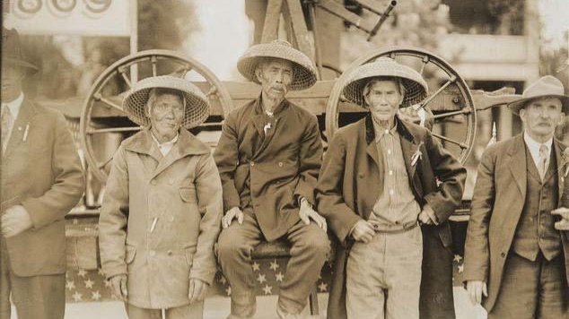
Chinese workers helped build the Central Pacific Railroad through the Sierra Nevada, ca. 1860s. Wikimedia Commons.
The transcontinental railroad was one of the largest infrastructureBasic systems that help a country work. projects in U.S. history. It connected the East and West, moved goods faster, and helped the United States grow into a modern economic power. Chinese workers did much of the most dangerous work on the Central Pacific line. They blasted tunnels through granite, worked near cliffs, and survived winter storms in the mountains.
The railroad was a huge infrastructure project. It connected the East and West. It helped goods and people move faster. Chinese workers did some of the most dangerous work. They blasted tunnels, worked near cliffs, and faced heavy snow.
Many Chinese workers were paid less than white workers and had to buy their own food and tents. In 1867, thousands went on strikeWhen workers stop working to demand change. to demand better pay and safer conditions. The company cut off their food supply until they returned. Their strike did not win every demand, but it showed that workers were not powerless.
Many Chinese workers were paid less than white workers. They also had to buy their own food and tents. In 1867, many went on strike. They wanted better pay and safer work. The company refused, but the workers showed courage.
When the railroad was completed at Promontory Summit, Utah, the public celebration centered on company leaders. The Chinese workers who made the western line possible were barely visible in the story. That silence matters. It shows how a country can depend on a community while still denying that community respect and power.
When the railroad was finished in Utah, company leaders got most of the attention. Chinese workers were barely included in the story. That matters. It shows how a country can need a group of people but still deny them respect.
DID YOU KNOW
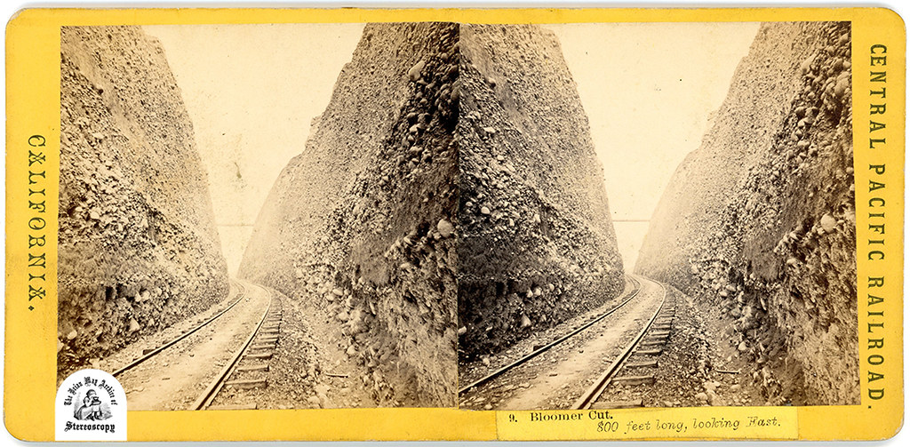
Cape Horn railroad construction, Sierra Nevada, 1860s.
Some workers on the Central Pacific line were lowered in baskets over cliffs to drill holes for explosives. Imagine doing dangerous mountain work, helping connect a continent, and then being treated like a footnote in the victory photo.
CHAPTER TWO
EXCLUSION BY LAW
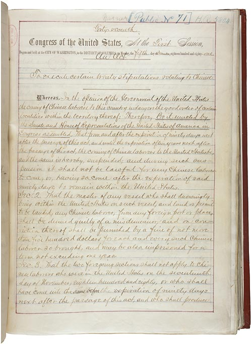
The Chinese Exclusion Act, approved in 1882, became the first major federal law restricting immigration by a specific ethnic group. National Archives.
In 1882, Congress passed the Chinese Exclusion ActLaw that banned most Chinese laborers from immigrating.. It banned Chinese laborers from entering the United States and blocked many Chinese immigrants already in the country from becoming citizensLegal members of a country.. The law turned anti-Chinese racism into national policy.
In 1882, Congress passed the Chinese Exclusion Act. It banned most Chinese laborers from coming to the United States. It also blocked many Chinese immigrants from becoming citizens. Racism became part of federal law.
ExclusionBeing kept out by law or custom. did not stop at the border. State and local laws limited where many Asian immigrants could live, work, go to school, own land, or marry. These were not just rude opinions. They were systems designed to keep Asian communities useful as workers but unequal as people.
Exclusion did not only happen at the border. Some laws limited where Asian immigrants could live, work, learn, own land, or marry. These were not just mean ideas. They were systems meant to keep people unequal.
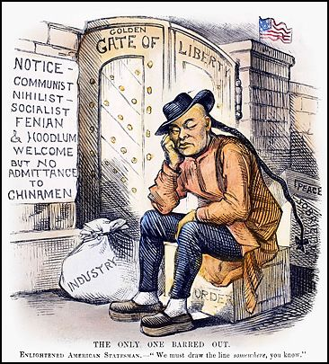
The Only One Barred Out, 1882. This cartoon criticized the exclusion of Chinese immigrants from the United States. Wikimedia Commons.
During World War II, exclusion took another form. After Japan attacked Pearl Harbor, President Franklin Roosevelt signed Executive Order 9066Order that allowed forced removal during World War II.. The U.S. government forcibly removed about 120,000 Japanese Americans from the West Coast. About two-thirds were U.S. citizens.
During World War II, exclusion changed form. After Japan attacked Pearl Harbor, President Roosevelt signed Executive Order 9066. The government forced about 120,000 Japanese Americans from the West Coast. About two-thirds were U.S. citizens.
Japanese Americans were sent to incarceration campsPlaces where people are imprisoned by force. without trials or charges. Families lost homes, farms, businesses, and years of freedom. The government claimed this was for national security. Later investigations found the decision was driven by racial prejudice, wartime fear, and failed political leadership.
Japanese Americans were sent to incarceration camps. They had no trials and no charges. Families lost homes, farms, businesses, and years of freedom. The government said it was about safety. Later, investigations showed racism and fear were major causes.
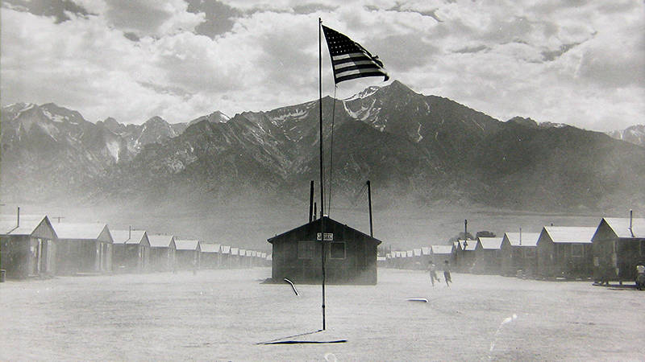
Manzanar War Relocation Center, California, 1942. Library of Congress.
FAST FACTS
AAPI exclusion and resistance in U.S. history
1869the year the transcontinental railroad was completed after Chinese workers built much of the dangerous western route
1882the year Congress passed the Chinese Exclusion Act, the first major federal law targeting immigration by ethnic group
120Kabout the number of Japanese Americans forced into incarceration during World War II without trials or charges
1988the year the United States formally apologized for Japanese American incarceration through the Civil Liberties Act
◆
CHAPTER THREE
RESISTANCE AND SURVIVAL
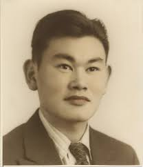
Fred Korematsu challenged the forced removal of Japanese Americans. Wikimedia Commons.
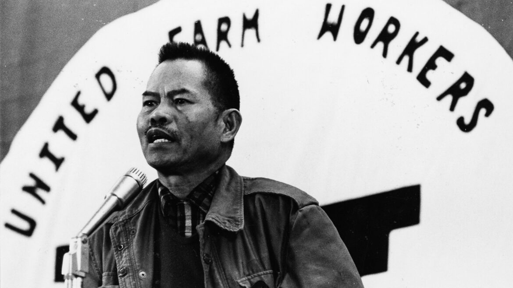
Larry Itliong and Filipino farmworkers helped launch the Delano grape strike in 1965. National Park Service or Wikimedia Commons.
ResistanceFighting back against unfair power. can take many forms. Fred Korematsu refused to report for forced removal. He was arrested and convicted, but he continued his legal fight. In 1944, the Supreme CourtThe highest court in the United States. ruled against him in Korematsu v. United States. That decision is now remembered as one of the Court's worst civil rights failures.
Resistance can happen in many ways. Fred Korematsu refused to report for forced removal. He was arrested and convicted. He kept fighting in court. In 1944, the Supreme Court ruled against him. Today, many people see that decision as a serious failure.
Korematsu's conviction was finally overturned in 1983 after hidden government documents showed that officials had withheld evidence. His story reminds us that a legal loss is not always the end of a movement. Sometimes resistance means keeping the truth alive until the country is forced to face it.
Korematsu's conviction was overturned in 1983. Hidden documents showed that the government had held back evidence. His story shows that losing in court is not always the end. Sometimes people keep fighting until the truth is recognized.
AAPI resistance also shaped the labor movementOrganized efforts to improve workers' rights.. In 1965, Filipino farmworkers led by Larry Itliong began the Delano grape strike. They demanded better wages and conditions. They later joined with Mexican American workers, including Cesar Chavez and Dolores Huerta, to build the United Farm Workers.
AAPI resistance also shaped the labor movement. In 1965, Filipino farmworkers led by Larry Itliong began the Delano grape strike. They wanted better pay and working conditions. They later joined with Mexican American workers to build the United Farm Workers.
Southeast Asian refugeeA person forced to leave home for safety. communities are another major part of this history. After the Vietnam War, many Vietnamese, Cambodian, Laotian, and Hmong families came to the United States. They arrived after war, displacement, and loss. They built new lives, opened businesses, created community organizations, and changed cities across California and the country.
Southeast Asian refugee communities are also part of this history. After the Vietnam War, many Vietnamese, Cambodian, Laotian, and Hmong families came to the United States. Many had lost homes and safety. They built new lives, businesses, and communities.
ART SPOTLIGHT
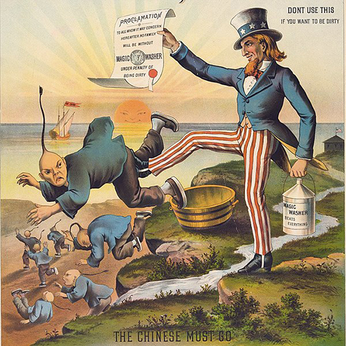
The Chinese Must Go: Magic Washer, 1886. Anti-Chinese political cartoon. Wikimedia Commons.
This cartoon looks strange now, but it was part of a very real campaign to make exclusion seem normal. Political cartoons did not just reflect racism; they helped teach readers who should be seen as American and who should be pushed out.
◆
CHAPTER FOUR
THE FIGHT FOR BELONGING
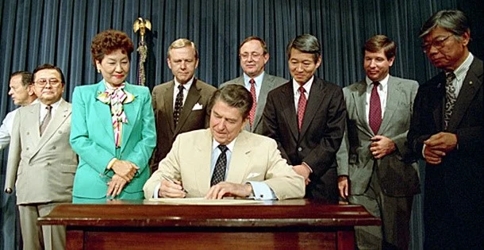
The Civil Liberties Act of 1988 formally apologized for Japanese American incarceration and provided redress to survivors. Wikimedia Commons or National Archives.
In 1988, Congress passed the Civil Liberties ActLaw that apologized for Japanese American incarceration.. It formally apologized for Japanese American incarceration and gave reparationsPayment or repair for serious harm. to surviving prisoners. This did not erase what happened, but it mattered. It showed that the government could admit harm and make a form of repair.
In 1988, Congress passed the Civil Liberties Act. It apologized for Japanese American incarceration. It also gave reparations to survivors. This did not erase the harm. But it showed that the government could admit wrong and try to repair it.
The term AAPIAsian American and Pacific Islander. includes many different communities. Chinese, Filipino, Japanese, Korean, Vietnamese, Hmong, Indian, Pakistani, Hawaiian, Samoan, Chamorro, Tongan, and many other groups have different languages, histories, and experiences. AAPI is useful as a shared political term, but it should never flatten people into one story.
AAPI means Asian American and Pacific Islander. It includes many communities, such as Chinese, Filipino, Japanese, Korean, Vietnamese, Hmong, Indian, Hawaiian, Samoan, Chamorro, and Tongan people. These groups have different stories. AAPI should not make them all seem the same.
Pacific Islander histories are especially important. Native Hawaiian, Chamorro, Samoan, Tongan, and other Pacific Islander communities have faced colonizationWhen one country controls another people's land., military control, land loss, and unequal political rights. The United States overthrew the Hawaiian Kingdom in 1893 and annexed Hawaii in 1898. Guam and American Samoa remain U.S. territories, which means their residents do not have the same voting power as people in states.
Pacific Islander histories are very important. Native Hawaiian, Chamorro, Samoan, Tongan, and other Pacific Islander communities faced colonization, military control, land loss, and unequal rights. The United States overthrew the Hawaiian Kingdom in 1893. Guam and American Samoa are still U.S. territories today.
CHINESE AMERICANS
Built railroads, farms, and businesses. Faced exclusion laws and built Chinatowns as survival communities.
JAPANESE AMERICANS
Built farms and businesses. Faced wartime incarceration and later won apology and redress.
FILIPINO AMERICANS
Organized farm labor and helped begin the Delano grape strike that shaped the UFW.
PACIFIC ISLANDERS
Continue struggles over sovereignty, land, voting rights, military presence, and cultural survival.
DOCUMENT MOMENT
PRIMARY SOURCE MOMENT
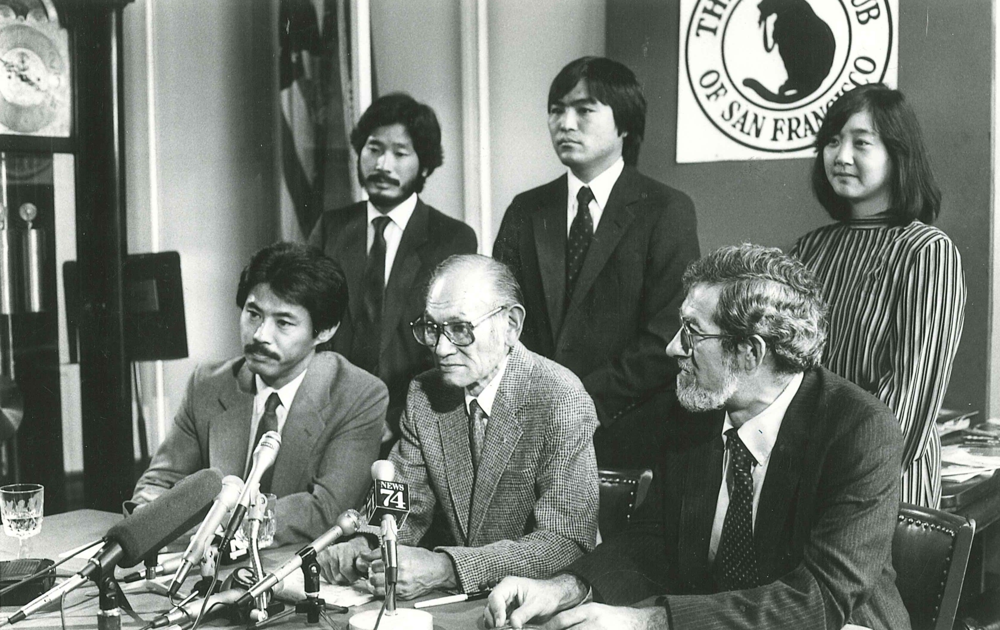
Fred Korematsu speaks after his conviction was overturned in 1983. His case became a symbol of the fight for civil liberties. Wikimedia Commons.
PRIMARY SOURCE
“According to the Supreme Court decision, being an American citizen was not enough. They say you have to look like one, otherwise they say you can’t tell the difference between a loyal and disloyal American. I thought that this decision was wrong and I still feel that way. As long as my record stands in federal court, any American citizen can be held in prison or concentration camps without a trial or a hearing.”
Fred Korematsu, statement about Korematsu v. United States, 1983.
Korematsu connects citizenship, race, and government power. His words show that the fight for belonging was not only about being allowed into the country. It was also about whether the country would protect people equally once they were already citizens.
This source connects directly to the essential question. AAPI communities helped build the United States, but belonging was never automatic. Korematsu’s words show how fear and racism could make citizenship feel conditional. The fight for belonging included court cases, strikes, community survival, political organizing, and demands for public memory.
This source connects to the essential question. AAPI communities helped build the United States. But belonging was not automatic. Korematsu’s words show that citizenship did not always protect people equally. People fought through court cases, strikes, community work, organizing, and memory.
THEN AND NOW
AAPI communities were never outside the American story. They helped build it, challenged it, and kept expanding who gets seen as belonging.
THEN
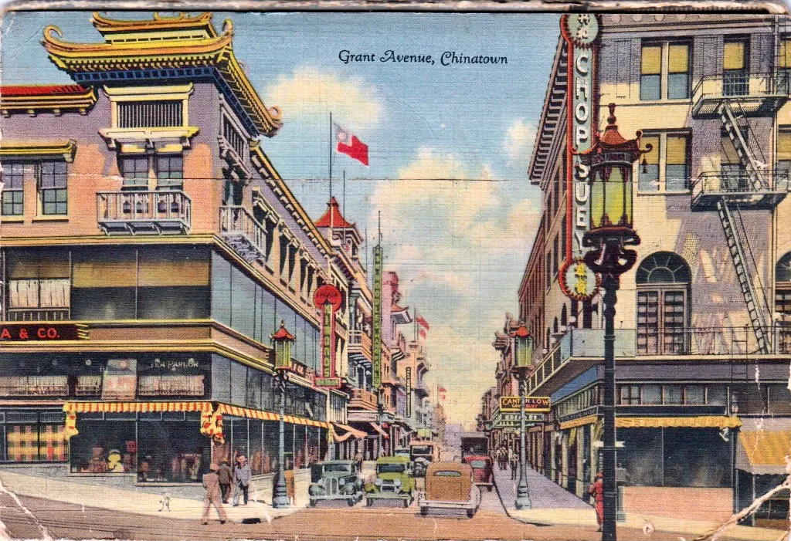
Historic Chinatown street scene, San Francisco, ca. early 1900s. Library of Congress or Wikimedia Commons.
NOW
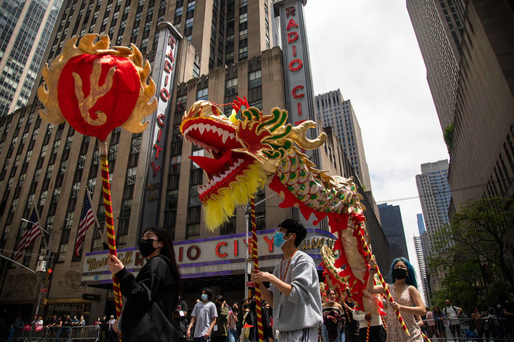
Modern AAPI community celebration or cultural parade. Wikimedia Commons.
THEN
Historic Chinatowns grew in a country that often treated Chinese immigrants as outsiders. These neighborhoods became places of work, family life, business, language, food, and safety. They also showed how communities built belonging even when laws tried to exclude them.
NOW
Modern AAPI communities continue to gather in public through festivals, parades, organizing, businesses, cultural centers, and political leadership. These spaces show agency, pride, and visibility. They remind people that AAPI history is not only about harm; it is also about survival and community power.
CONNECTION
The past and present connect through the fight to be seen accurately. Chinese railroad workers were left out of the famous photograph. Japanese Americans were imprisoned while claiming their rights as citizens. Filipino farmworkers helped launch a labor movement but were often left out of the popular story. Today, telling AAPI history more fully is one way communities challenge erasure.
What changes when a country tells the story of who built it more honestly?